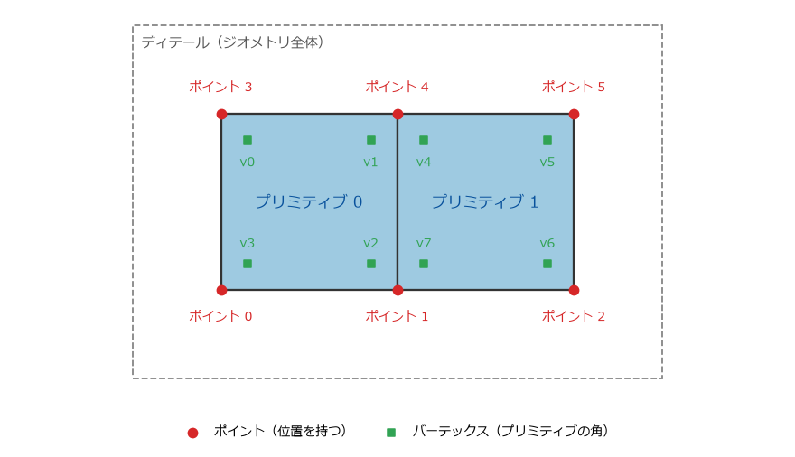

ジオメトリとアトリビュート
Houdini のジオメトリは、ポイント、バーテックス、プリミティブ、ディテールの 4 種類の要素でできている。それぞれの要素に、アトリビュートと呼ばれる名前付きのデータを持たせられる。アトリビュートは Houdini の中心的な仕組みであり、多くのノードがアトリビュートを読んで動作を変え、アトリビュートを書いて結果を伝える。
ジオメトリの 4 種類の要素

図 12 2 枚の四角形からなるジオメトリの要素。ポイントが 6 個、プリミティブが 2 個、バーテックスが 8 個ある。
要素 |
説明 |
|---|---|
ポイント（point） |
空間の中の位置。位置は |
プリミティブ（primitive） |
ポイントをつないで作る形状の単位。ポリゴン、曲線、球などがある。 |
バーテックス（vertex） |
プリミティブの角。プリミティブがどのポイントを使うかを表す。 |
ディテール（detail） |
ジオメトリ全体。ジオメトリに 1 つだけある。 |
ポイントとバーテックスの違いは分かりにくい。図 12 では、ポイント 1 とポイント 4 を 2 枚のプリミティブが共有している。ポイント 1 を使うバーテックスは、プリミティブ 0 の v2 と、プリミティブ 1 の v7 の 2 個である。ポイントは「位置」であり、バーテックスは「プリミティブがそのポイントを使っていること」を表す。
このように分けておくと、共有している 1 つの点に、面ごとに違うデータを持たせられる。例えば、立方体の角では 3 つの面が 1 つのポイントを共有するが、面の向きはそれぞれ違う。角をくっきりと見せたいときは、法線をバーテックスに持たせて、面ごとに違う向きにする。テクスチャの継ぎ目でも、1 つのポイントに面ごとに違う UV 座標を持たせるために、UV をバーテックスに持たせる。
要素には 0 から始まる番号が付いている。ポイント番号、プリミティブ番号などと呼ぶ。番号は、上流のノードの変更で点の数が変わると変わる。
アトリビュート
アトリビュート（attribute）は、要素ごとに持たせる名前付きのデータである。ジオメトリは、要素の種類ごとに 1 枚の表になっていて、行が要素、列がアトリビュートだと考えると分かりやすい。例えばポイントの表には、P（位置）や Cd（色）の列がある。
アトリビュートには型がある。
型 |
例 |
|---|---|
浮動小数点数（float） |
|
整数（integer） |
|
ベクトル（3 個の浮動小数点数） |
|
4 個の浮動小数点数 |
|
文字列（string） |
|
辞書、配列、行列 |
用途に応じて使う。 |
同じ名前のアトリビュートが複数の種類の要素にある場合は、バーテックス、ポイント、プリミティブ、ディテールの順に優先される。例えば、ポイントとプリミティブの両方に Cd があると、ポイントの Cd が使われる。
よく使うアトリビュート
いくつかのアトリビュートは、名前と意味が決まっていて、多くのノードやレンダラーがその名前で読み書きする。
名前 |
型 |
意味 |
|---|---|---|
|
ベクトル |
ポイントの位置。 |
|
ベクトル |
法線。 |
|
ベクトル |
色（R、G、B を 0 から 1 で表す）。ビューポートでもこの色で表示される。 |
|
浮動小数点数 |
不透明度。 |
|
ベクトル |
UV 座標。1 番目と 2 番目の成分を使う。 |
|
ベクトル |
速度。シミュレーションやモーションブラーで使う。 |
|
浮動小数点数 |
大きさの倍率。Copy to Points ノードのコピーの大きさなどに使う。 |
|
ベクトル |
軸ごとの大きさの倍率。 |
|
4 個の浮動小数点数 |
向き（四元数）。 |
|
整数 |
要素を追跡するための番号。要素の番号が変わっても変わらない。 |
|
文字列 |
プリミティブなどの名前。 |
名前の大文字と小文字は区別される。Cd を cd と書くと、別のアトリビュートになる。
ジオメトリスプレッドシートで確かめる
アトリビュートの値は、Geometry Spreadsheet で確かめられる。ペインに Geometry Spreadsheet のタブを追加し、ネットワークエディターでノードを選ぶと、そのノードの出力が表として表示される。ポイント、バーテックス、プリミティブ、ディテールのどの表を表示するかは、Geometry Spreadsheet の中のボタンで切り替える。
作例: 起伏のある地形に色を付ける
アトリビュートを作って使う例として、平らなグリッドに起伏を付け、高さに応じて色を付ける。ネットワークは 図 13 のとおりである。サンプルコードの build_attributes.py でも同じネットワークを作れる。
図 13 地形のネットワーク
/obj に Geometry ノード terrain を作り、その中で次のノードを順につなぐ。
Grid（
grid）: Rows と Columns を50にする。10 m 四方の平らな面に、2500 個のポイントができる。Normal（
normal）: Add Normals to を Points にする。全てのポイントに、真上を向いた法線Nができる。Attribute Noise（
bumps）: ノイズ（滑らかに変化する乱数）でアトリビュートの値を変えるノードである。次のパラメーターを設定する。Attribute Names: 既定の
CdをPに変える。アトリビュートの型は、既定の Vector のままにする。Noise Along Vector: オン。Vector Attribute は
Nのままにする。ノイズがNの向き、つまり真上にだけ加わる。Amplitude:
1.5（ノイズの大きさ）Element Size:
3（起伏の間隔）
Normal（
recompute_normal）: Add Normals to を Points にする。起伏に合わせて法線を計算し直す。Attribute Create（
height）: Name をheightにし、Value の 1 番目の欄に$TYと入力する。$TYは、処理中のポイントの y 座標を表す変数（ローカル変数）である。各ポイントの高さが、浮動小数点数のポイントアトリビュートheightに入る。Color（
color_by_height）: 次のパラメーターを設定する。Color Type: Ramp from Attribute
Attribute:
heightRange:
0、1.5
Attribute Ramp の左端の色を緑、右端の色を白にすると、低い所が緑、高い所が白になる。
Attribute Randomize（
random_pscale）: Attribute Name をpscale、Dimensions を1にする。Min Value を0.05、Max Value を0.15にすると、各ポイントに 0.05 から 0.15 のランダムな値が入る。pscaleは、例えばこの地形のポイントに木をコピーするときの、木の大きさとして使える。Group Expression（
peak_group）: Group Type を Points、Group Name をpeakにし、VEXpression に@height >= 1.0と入力する。heightが 1.0 以上のポイントがpeakグループに入る。Null（
OUT）: Display フラグを立てる。
OUT を選んで Geometry Spreadsheet を見ると、ポイントの表に P、N、Cd、height、pscale の列が並んでいる。それぞれの列を、どのノードが作ったかを確かめてほしい。
注釈
Color ノードの Attribute に P のようなベクトルを指定すると、x、y、z の成分がそれぞれ独立にランプで色に変換される。高さだけで色を決めたかったため、ここでは y 座標を浮動小数点数のアトリビュート height にコピーしてから使った。
グループ
グループ（group）は、要素に付ける名前付きの集合である。ポイント、プリミティブ、バーテックス、エッジのグループがある。1 つの要素が複数のグループに入ってもよい。
多くの SOP は Group というパラメーターを持っていて、そこにグループ名を書くと、そのグループの要素だけを処理する。例えば、Transform ノードの Group に peak と書くと、peak グループのポイントだけが動く。
Group には、グループ名のほかに次のようなパターンも書ける。名前を付けたグループを作らずに、その場で対象を選べる。
パターン |
意味 |
|---|---|
|
番号が 0 から 10 の要素 |
|
番号が 0 から 100 の要素を 1 つおきに |
|
|
|
|
|
ポイント番号が 100 未満のポイント |
ノードとネットワーク で述べたように、要素の番号は上流の変更で変わる。番号で指定するより、アトリビュートの値やグループで指定する方が、変更に強いネットワークになる。
ローカル変数とアトリビュート
作例で使った $TY は、ノードが要素を 1 つずつ処理するときに、処理中の要素の値を表す変数である。このような変数をローカル変数と呼ぶ。ローカル変数は古くからある仕組みで、使えるノードと使えないノードがある。
現在の Houdini では、要素ごとの計算には VEX を使うのが一般的である。VEX では、$TY の代わりに @P.y と書く。作例の Group Expression ノードの @height >= 1.0 も VEX の式である。VEX は VEX 入門 で説明する。